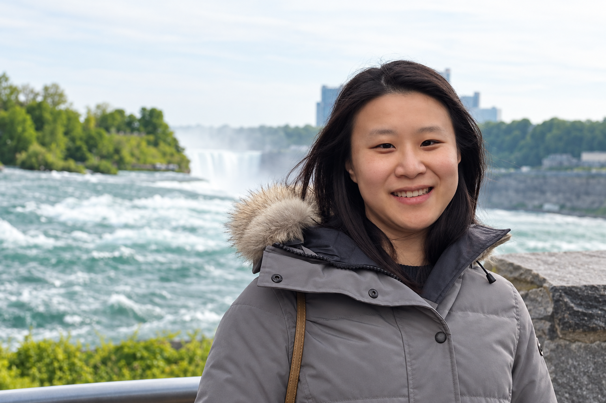

The Simulator’s Blueprint: Automata Learning from Cybersecurity Logs
CAV, 2026
Hi, I'm Yiyi Zhang. I'm a visiting scientist in Computer Science at Cornell University and a Siyuan Fellow at Shanghai Jiao Tong University. At Cornell, I work closely with Wen Sun and Nate Foster. My research focuses on reinforcement learning, particularly its theoretical foundations and applications to LLMs and cybersecurity.
I received Ph.D. degrees in Computer Science from Shanghai Jiao Tong University and The University of Osaka through a double-degree program. My doctoral research focused on generative models for gait under the supervision of Liqing Zhang and Yasushi Yagi. Prior to that, I obtained my bachelor's degree in Computer Science from Shanghai Jiao Tong University, where I was a member of the ACM Honors Class.

CAV, 2026
NeurIPS, 2025
ICML, 2025
ICLR, 2025
AAAI, 2025
IJCB, 2025
Reinforcement Learning Journal / RLC, 2024
Journal of Computer Science and Technology, 2023
IEEE Access, 2021
AAAI, 2020
For citations and the latest publication list, visit my Google Scholar profile.
Visiting Scientist · Computer Science
Reinforcement learning and LLM agents for autonomous cyber defense.
Jan. 2024 – Present
Postdoctoral Researcher · Department of Computer Science
Identity-preserving gait generation and mixed-reality behavioral data collection.
Dec. 2022 – Dec. 2023
Algorithm Engineer
Deep learning for image matting, deployed in the Makaron app.
Feb. 2019 – Sept. 2019
Stars of Tomorrow Research Intern · Urban Computing Group
Machine learning and data mining for urban air quality.
Aug. 2016 – June 2017
Ph.D. in Computer Science (Double Degree Program)
Oct. 2019 – Dec. 2022
Ph.D. in Computer Science
Sept. 2017 – Dec. 2022
B.Eng. in Computer Science (Honor)
ACM Honors Class · Outstanding Graduate
Sept. 2013 – July 2017
Reviewer: NeurIPS and ICLR (2025–2026); CVPR, ECCV, and AAAI (2020–2026); IJCAI (2020–2025).